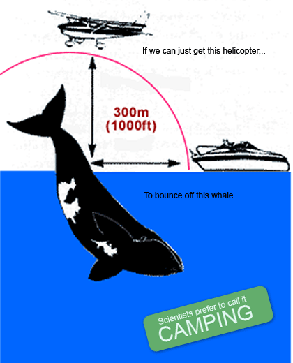
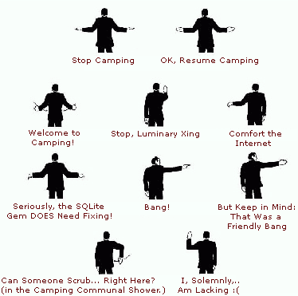

Uh Oh, Someone Saw the Smoke #
Tim Bray: Yep, Camping does seem to provide something not entirely unlike an application framework in a little file, provided of course you download and install several acres of infrastructure.
Sam Ruby: My issue is that there are a number of superficial signs that _why’s attention to detail appears to be somewhat… lacking.
I don’t want to start an argument here, but I have cared for every detail. Might I remind you:

Duarte
How clever!! I want to print this and make a poster!
MenTaLguY
We do need to figure out what to do with relative URIs in Hobix… I’ve been avoiding the issue for some while by hard-coding absolute URIs in my entries, but that’s not a real solution at all.
Probably it has to be dealt with in the text processor before everything gets rolled into one HTML -ful string. I mean, we could probably parse into the HTML and fix URLs in the RSS output plugin but …
Hmm. Hpricot? What do you think?
Sam Ruby
Hmmm. First comment got eaten. Trying again.
The above was done with a simple copy/paste. Don’t believe me, try it yourself. And the following is just to be ornery:
Don’t see it? What a pity. My point is that these types of things are what will convert people like Tim (or myself) from agreeable folk to being The Beta Tester From Hell.
With this in mind, I hereby throw down the virtual gauntlet. Either make your weblog consistently well-formed, or decide not to. If you decide not to, you can indicate that by dropping the misleading link to the W3C validator. Furthermore, either drop the use of relative URI references in your feed, or convert to a feed format with proper support for such constructs.
Are you up for the challenge?
Sam Ruby
OK, so the odd display in the face of a “smart quote” was just a preview artifact.
Skorgu
grabs popcorn
hgs
If there are bolts of inspiration flying about, could someone get hit by one about layout? I’d be delighted if redhanded played better with big fonts: all the comments and stories presently don’t expand to soak up the left margin, and people with long names have the right hand side of the name lost under the comment box. It would make it easier to read longish lines of code, too. Don’t take this as a complaint, just an RFE (Request For Enhancement). There’s so much good stuff coming from here I don’t want to stem the flow, but just to let you know the issue exists. Thanks. :-)
Tim Bray
So far, Camping doesn’t look like it’ll actually get in the way of generating clean output.
But you know, Mr. Stiff, Sam’s right about well-formedness and URIs and validator links and so on. The Web isn’t a place, it’s a mesh of agreements (http://worldofends.com/) and the rules aren’t that hard to follow. I’d say just do it.
pedant
Ummm, that’s not a helicopter.
More like a Cessna.
why

der-matthias
Hehe, you guys made my day.
hoyhoy
Sam’s permalink URIs in his atom feed break NetNewsWire.
why
I’m really trying to be civil, but that jab about the helicopter was really low!! In due time, I’ll respond to all of these, point-by-point, except I’m kind of slow (roughly fax machine speed.)
Oh, but Tim, thankyou for the very complete review of all the various problems. Changeset [130] decouples the database drivers so it’ll only load it if you use it. (Using Ruby’s autoload feature.) Installation will be easier when the next gems come out.
Good points, Sam. I will work on fixing this blog hopefully tomorrow or something.
Sam Ruby
hoyhoy: yup. And I did that explicitly to test an edge case. If, instead, I were to put an explicit xml:base at the top of the feed, NNW would be happy. But as it stands, I have an email in my in-box from Brent acknowledging that this is a bug/regression along with a promise that he will fix it in the next minor release.
That’s the benefit of clean and clear specifications.
Meanwhile, how does the RSS output plugin handle less-than characters in titles?
MenTaLguY
Sam: quite nicely thankyou—provided why is running Redhanded a reasonably current Hobix. A while back I know there were some RSS quoting bugs I had to fix in Hobix trunk.
MenTaLguY
(to why’s credit, I recall the quoting bugs were the fault of an upstream library which had to be worked around)
MenTaLguY
You know, at this point in my life, I’m beginning to think that string escaping and encoding is something that should be enforced by a language’s type system. For sufficiently capable typed languages at least.
MenTaLguY
Just looked up r121—it was a thing with REXML not requoting e.g. → in body text when it should. Titles always worked right.
Sam Ruby
MenTaLguY: it was a trick question. There is no right way to encode a less-than character in a title in RSS . If you show me an example weblog post, I can tell you which aggregators are likely to misinterpret it.
MenTaLguY
And … I just looked at the RSS “spec”. That was a trick question, wasn’t it?
Looking around, I see that it is conventional to have HTML in titles, which means single-scaping Hobix’s text-only titles is “wrong” as they should instead be double-escaped. Bother.
MenTaLguY
..aaaand, our posts missed each other. Okay.
MenTaLguY
I guess the only reasonable option is to strip less-thans, then.
MenTaLguY
Hmm, won’t there also be the same sorts of issues with ampersands?
Sporkmonger
MenTaLguY: I think Sam was referring to RSS ’s ambiguity regarding whether the title element should be treated as embedded HTML or plain text. In other words, are ‘<’ chars single-escaped or double-escaped? But that’s just a guess based on the fact that Sam specifically mentioned the title element. I’m guessing the question’s similar in intent to Sam asking about whether one’s REST webservice supports ETags.
_why: Woah, autoload makes me joyous. I shall henceforth be using it more often.
MenTaLguY
Sporkmonger: Yeah, I got that eventually. Not something I’d really thought about before, sadly. For RSS
<description>elements you’ve got no choice but to assume HTML , but with<title>the split between the HTML and non-HTML worlds is more even. Can’t win there really, except by stripping down to the common subset valid in both interpretations.Sam Ruby
Actually, you have three choices .
Don’t let this happen to you.
Seth Thomas Rasmussen
You don’t have to be perfect or follow the rules to be admirable and an inspiration.
I say keep up the good work, and shazbutt to anybody that is too lazy to help fix your tool or find another until they’re satisfied with yours.
I mean come on, coming in here and whining about those silly W3 badges? What is this, 2003? I thought we all lightened up a bit.
http://molly.com/joke.php
MenTaLguY
While we could remove the RSS feed from the default Hobix template, I don’t forsee us jettisoning RSS support in Hobix entirely, honestly. But I am going to add title stripping on the RSS output and upgrade Hobix’s existing Atom support to Atom 1.0.
FWIW , Hobix does currently generate both RSS and Atom feeds by default (hence Redhanded already has one, although it looks like it still suffers from the aforementioned REXML bug). It’s up to the web designer which feed(s) they choose to advertise or disable.
MenTaLguY
Er, already has an Atom feed, I mean.
sayrer
you guys all seem to know what’s going up. how do I do include the bold tags in my RSS title?
Sam Ruby
Dropped comment again. Trying it in segments:
That phrase cracks me up. Are sites that provide valid XHTML “jettisoning” HTML ? Or while people continue refer to it generically as HTML anyway, just like they are doing with Atom. The term RSS is now as generic, and as disposable, as Kleenex.
How about .gif vs .jpg vs .png?
Sam Ruby
People don’t want to chose between the same data in multiple feed formats, they want one that works. You can even permanently redirect a feed of one format to another one of another format without causing a problem.
And once you have solved the “might be HTML , might not” problem in RSS titles – remembering that people are prone to say things like R&D – don’t forget to double back and solve the relative URI problems.
MenTaLguY
I’m amenable to making Atom the sole default for feeds in the initial Hobix template, but we’re keeping the RSS plugin just like we’re keeping the okaynews plugin.
In turn, I don’t need to solve the overall RSS title problem, I just need to be able to generate RSS feeds that are unambiguous to readers. The easiest way to accomplish that is to strip (rather than try to escape) any characters which signal the start of a special token in HTML , when emitting the RSS title. Brutal, but if that bothers people they can always switch to Atom.
Lastly, the relative URI problem is one which needs to be solved anyway. A single Hobix entry may appear on several different HTML pages; if a URI reference in the entry content is relative it either needs to be adjusted or made absolute (note that it may be aggregated with other entries on the same page—it’s not just a matter of setting up a base href). If we solve that for the HTML pages, we may as well do it for RSS .
MenTaLguY
By the way, if we’re going to continue this thread, it might help if we clearly distinguished between RedHanded the site and Hobix the CMS (upon which the former is built). I’m really only in a position to answer for the latter.
MenTaLguY
On a totally other note, I’ve added the workaround for the REXML quoting bug to the Atom plugin, as of r129. Good times.
MenTaLguY
Annnnnnd… r130 gives us valid Atom 1.0. Still some nicities that need dealing with though like the self-link.
FlashHater
MenTaLguY: I was just about to comment on that :P
Sam Ruby
That might affect the channel title in the hobix feed
You might find some useful information halfway down this page
If you ever want to support inline SVG or MathML, we should talk further.
MenTaLguY
Yeah, it would. If that bugs why, it’s not hard to switch the feed to Atom (I don’t have access to hobix.com to make changes like that).
Regarding xml:base-for-solving-HTML-inclusion-reference-problems, I wish it were a general option. I mean, it’s obviously fine for Atom, but for (X)HTML pages on the web site itself? So long as Internet Explorer continues to treat XHTML as funny-looking HTML rather than XML (or the IE userbase drops low enough that we can exclude it) we’re kind of boned. To some extent that goes for SVG and MathML too.
That said, if someone wanted to make an XHTML site in Hobix that didn’t need to work in IE, it’s already dead trivial to write a Hobix template which has xml:base defined on the <div>s or whatever containing individual entries. Inline SVG and MathML also require no special support from Hobix.
Sam Ruby
Is there a good place to discuss Hobix? I tried installing it. I have Ruby installed, but on Ubuntu, one needs to separately install rdoc. This caused the Hobix installation to fail. Installing rdoc and then retrying resulting in Hobix declaring that I already had the latest version installed.
Now I get/usr/local/lib/site_ruby/1.8/hobix/commandline.rb:25:in `join': can't convert nil into String (TypeError) from /usr/local/lib/site_ruby/1.8/hobix/commandline.rb:25 from /home/rubys/bin/hobix:2MenTaLguY
(If we started e.g. filtering everything through Hpricot to do URI fixups, of course, we would necessarily make a distinction between HTML and non-HTML content.)
MenTaLguY
Sam: really I wouldn’t install anything but hobix from SVN trunk at this point. <= 0.4 has lots of issues. I am trying to get a less problematic 0.5 out the door.
You will need more than just rdoc. I don’t have a full list in front of me, but you’ll need RedCloth and some other Ruby libraries which should be part of the main Ruby package but are not under Ubuntu.
Recommendation: just grab all the packages generated by Ubuntu’s Ruby source package to be safe (but I know you don’t need the Tk binding).
Further hobix-specific discussion is probably best carried out under the auspices of the Hobix mailing list.
me
I think too many people take stuff like this as an attack—it’s easy to do so. But, I think we need more people like this in the Ruby community. We need more people to educate us and to make us honest. There’s nothing at all wrong with that, and it can only make what we produce better. I have thin skin myself though, so I’d probably be crying about now….
Adam
Have you taken into account the whale’s perspective on this problem?
I mean I think this helicopter could cause some serious issues for mamalian aquatic friend here!
Paul
But seriously, pendant is right… that’s not a helicopter. I dont see how you can bounce a cesna off a whale. Seems like a big problem with the framework.
MonkeeSage
The framework is not really the bouncing of the helicopter off the whale, it is the distance between the whale the helicopter and the boat. The whale is just incidental, it could be replaced by a cement truck or Steve McQueen.
Comments are closed for this entry.